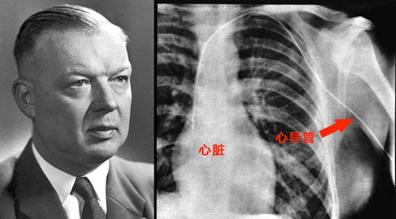

你好，欢迎来到《医学通识50讲》，我是薄世宁。
1961年4月12日，苏联宇航员加加林（Yuri Alekseyevich Gagarin）乘“东方一号”宇宙飞船进入太空。从此，人类对于太空这个曾经的禁区，迈出了关键一步。
加加林返回地球以后获得了“列宁勋章”，并被授予“苏联英雄”称号。再之后，他又成为宇航员队长和宇航员训练中心副主任，出访了二十多个国家，每到一个地方都受到人们的热烈欢迎。
但是，人类探索禁区的过程可并不都是这么幸运。
6年后的1967年，加加林的同事科马洛夫乘坐的飞船坠毁。
当营救人员找到飞船废墟的时候，只找到了科马洛夫脚上的一根骨头，身体的其他部分都被烧成了脸盆大小的一团焦炭。
人类探索禁区的过程中，有两个领域最特殊，同时具备三个共性：
第一，研究对象未知，过程充满风险。
第二，无论前期做过多少试验，得出多少数据，最终都要在真人身上验证。
第三：成功和失败具有巨大的不对称性。凯旋与悲剧同行，一旦成功，会给人类带来巨大福利。但是一旦失败，受试者可能是粉身碎骨。
这两个领域一个是太空研究，另外一个就是医学探索。
这节课就来说说医学上的禁区是怎样一个个被打破的。介绍的典型人物是福斯曼（Werner Forssmann）医生，他把导管亲手插到了自己的心脏里。
打破心脏禁区的医生
1929年，25岁的福斯曼在德国一家医院当外科医生。他对心脏有兴趣，但是在当时，医学对于心脏的认知非常粗浅，心脏就是禁区。
我们知道，用解剖动物或者尸体得来的粗浅认知给病人诊断或者治疗，是不可能获得突破性进展的。必须能够在人活着的时候，测量心脏内部数据，这样才有可能更好地诊断和治疗。
福斯曼想，能不能把导管逆着血管插到人的心脏里呢？
因为，确实有人做动物试验成功过，但是在人身上没有先例。这个试验太危险了，肯定不能用病人试。
福斯曼和同事商量：“你们说，我把这根管子插到我自己的心脏里行不行？”
大伙儿都不同意，说：“你疯了？管子进心脏很可能出现严重的心律失常，会要你命。”
但是，福斯曼不甘心。
接下来，他和手术室的护士搞好关系，谈他想做的这件事有多伟大，他说：“咱俩偷着干行不行，我用你的手术室，你让我拿你做试验。”这个护士鬼使神差地答应了。
于是，两人悄悄地溜进手术室，福斯曼把护士捆在了手术台上。护士闭上眼睛，等着福斯曼切开她的血管。
但是，当她睁开眼睛时，却发现福斯曼躺在另一个手术台上，用刀切开了他自己胳膊上的血管。
原来福斯曼说用护士做试验是假，用她的手术室才是真。福斯曼说：“这个事可能会死人，我先试我自己。”
在护士的哭声中，福斯曼小心翼翼地把一根管子慢慢地逆着自己胳膊上的静脉血管往里插。当他插到65厘米的时候，护士带着他拍了一张X光片。
就是下面这张照片，这是人类历史上第一次把导管插到活人的心脏里。

但是，他的试验结果刚一公布，就立刻遭到了集体攻击，“你是个疯子，你这是马戏团的小丑才玩的把戏”。结果，医院把福斯曼开除了。
但是，对于心脏禁区的探索，让人们不用切开心脏就可以研究心脏的结构和功能，从而得出更精确的诊断。
几十年后，美国的两个医生在福斯曼研究的基础上，开发出了心脏导管技术。
这个故事告诉我们：
首先，医学研究的是活体，医学禁区的探索比其他领域面临着更大的困境。
其次，福斯曼的研究结果经过几十年才得到认可和应用。但他的冒险仍然是幸运的，而大多数的试验结果都没有这么幸运，很可能最后验证下来根本没有价值。但是，这种自体试验一旦失败，结果可能是受试者的死亡。
医学探索的三个困境
医学探索面临的第一个困境：缺乏技术规范的困境。
在以前，医学缺乏技术规范。为了减少对病人的伤害，很多医生先做自体试验。因为这样做风险可控，大不了是搭上自己的一条命，不会损伤到病人或者志愿者的利益。
在今天，这种自体试验已经不提倡了。医学领域已经制定出严格的技术流程和规范来保证受试者的安全。
比如，新药审批必须要有临床试验。药监部门制定出一整套流程，先要说清楚毒理，要有足够的动物实验证明安全，然后才能拿到健康志愿者身上验证，最后才会用到病人身上开展安全性和有效性的进一步验证。
有了严格的技术规范，既保证了受试者安全，又让医学研究获得最大的收益，也就逐步解决了禁区探索的第一个困境。
第二个困境：伦理困境。
在医学上，只要是真正的科学问题，一定离不开探索。福斯曼的研究困境来自于技术，而有些探索的困境来自于伦理，这就是第二个方面。
比如，性医学研究。
这个禁区的探索就面临着巨大的伦理和道德困境。
首先是道德压力，“唾沫星子”就可能把人“淹死”。其次，怎么用科学研究方法去平息这种道德和伦理压力？
研究方法越科学，也就越有可能克服这种困境。否则真的可能成为不道德的研究。这都是摆在研究者面前的问题。
20世纪中期，美国妇产科男医生马斯特斯（William Howell Masters）要研究性高潮。
我们可能会用“极度美妙”来形容性高潮。
但是，什么是“美妙”呢？这只是一种主观的文学比喻。
马斯特斯认为，只有用科学方法找到性高潮的生理基础、数据，才能得到真正的医学解释。这能为研究人类繁衍，以及治疗性功能障碍问题提供科学数据。
马斯特斯说：“如果我们连人类怎么繁衍都毫不了解，还谈什么更好的治疗呢？”
打破禁区必须要有科学的试验手段。
马斯特斯先研究自己，研究女朋友的身体。后来，他给志愿者身上贴电极片，绑上血压袖带，连上监测的仪器，记录性爱过程中的心率、呼吸、血压这些数据变化。
为了观察女性性器官的变化，他还在女性自慰器上装上微型摄像头，记录自慰过程中阴道壁的变化。
最后，他完成了382名女性和312名男性的性行为观察，记录了上万次的性高潮。
马斯特斯利用科学的生理数据，从心率、血压、呼吸各个角度，验证了什么是高潮。
举个例子。
他认为，阴道高潮和阴蒂高潮产生的生理反应是一致的，也就是说两种高潮按照生理指标是无法区分的。但是另一方面，也不能否认主观感觉和文化带来的差异。
马斯特斯用科学的数据第一次探索了性的禁区，尽管他背负着大量的骂名和社会压力。
性研究这个禁区，终于得到了关键性的突破。他的数据直到今天，都被看做是性医学研究中的重要进展。对于治疗性功能障碍性疾病，以及研究人类性行为，都有巨大价值。
在今天，为了解决伦理问题，已经有了严谨的医学研究伦理规范。甚至在医院，都有各自的医学研究伦理委员会规范伦理问题。比如：
医学用技术规范和伦理规范，解决了医学禁区探索的两大困境，也就是缺乏技术规范的困境和伦理困境。
但是，医学研究的复杂性远远不止这些，在探索禁区的过程里，时刻都会遇到新情况。
比如我们前面提到的，为了保证病人的安全，新药审批要求必须完成足够的人体试验，充分验证安全性和有效性后才能上市。
那么，罕见病的病人怎么办？
本来患病人数就少，如果等到凑够了人体试验的人数，可能患病的人也就错过了最佳治疗时机。
这就是医学探索面临的第三个困境：特殊的现实困境。
这些问题怎么办呢？
医学工作者依然不能停止探索。对于特殊的情况，监管部门又单独制定出特殊规范，鼓励医学探索。
咱们国家就规定，对于罕见病病人开发的新药，临床试验可以适当放松，也可以申请减免临床试验，有条件批准上市。
另外，加快罕见病治疗药物和医疗器械的审评审批。对于国外已经批准上市的罕见病治疗药物和医疗器械，可有条件批准上市，上市后在规定时间内“补”做相关研究。
这么做的目的，是利用一切可能在尽量保证安全的基础上，为罕见病，尤其是可能因为缺乏药物而危及到生命的情况，先救命而实施的特殊规范。
在未来，我们必然会遇到更多的禁区需要打破，仍然会遇到特殊的困境。但是毫无疑问，凡是符合整个人类利益的探索，都是值得被鼓励和支持的。
这节课的主人公福斯曼，后来怎么样了？
1956年，福斯曼和开发心脏导管技术的两位美国科学家一起获得了诺贝尔生理学或医学奖。
当时因为他做自体试验而把他开除的医院，这个时候说：“欢迎你回家，福斯曼医生。咱们医院已经改名叫福斯曼医院了。”
探索，终于得到了应有的价值和认可。
下节预告
如何纠正体系的无知之错？下节课，我们介绍掀起洗手革命的代表人物——塞麦尔维斯。